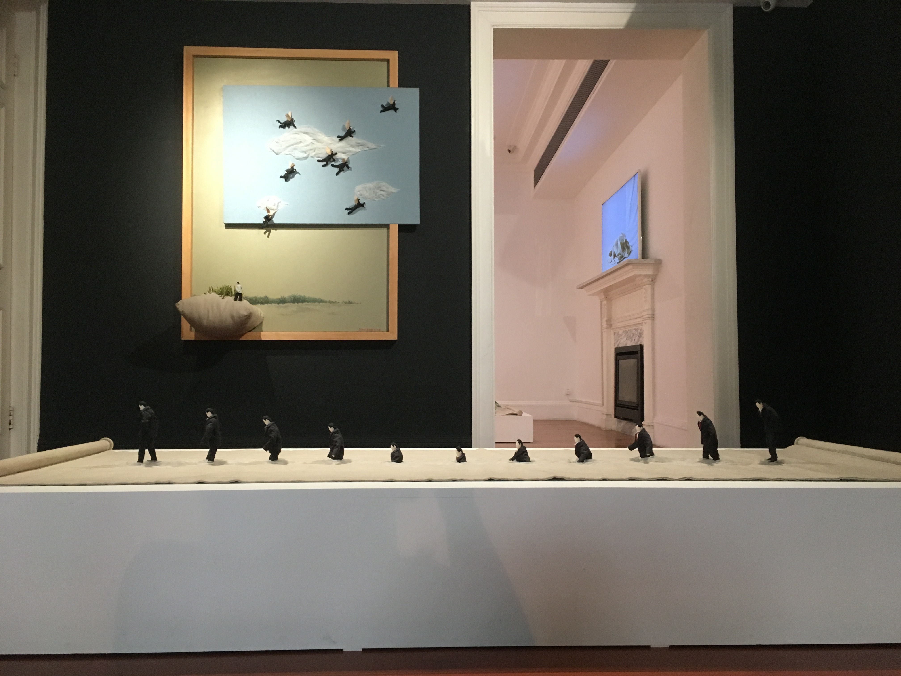
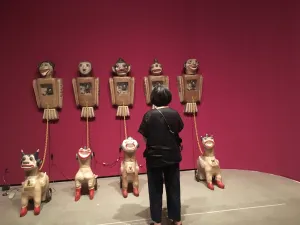
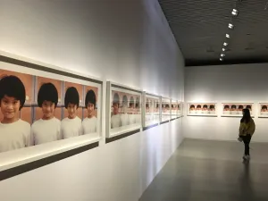
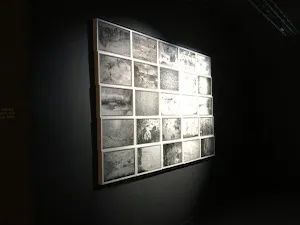
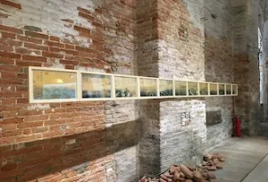

RESEARCH


Rationale
With China growing in global influence, its current reputation as a rising superpower is being reinforced through a strategic dissemination of its culture and the arts. This interweaving of state politics and the cultural realm is worthy of our assessment due to its potential impact on curatorial and artistic developments, as well as the art market in China and internationally. Additionally, a deeper understanding of how this macro-level and political context of nation branding intersects with Chinese contemporary art would also be a weathervane for the expansion of the creative industries in China and in the UK, plus their bilateral collaborations.

Interdisciplinarity
We take an interdisciplinary approach to investigate the politicisation of art for the construction of branding narratives. We position ourselves at the intersection of multiple concerns: artistic trends, Chinese nationalism, cultural values, global politics and macromarketing. We also cross multiple boundaries, be they academic disciplines (international relations and visual arts) or distinct industries (nation branding, creative arts, museums and curation).

Focus
We pose questions such as: How is the explosive field of Chinese contemporary arts generating a new stylisation and aesthetic for the nation brand? How does the instrumentalisation of Chinese contemporary art crystallise the dilemmas and politics of art diplomacy? Additionally, what does this combination of art, cultural nationalism and state oversight reveal about the prospects of China’s aspirations to excel in creativity, aesthetics and originality?

Research Methods
We share similar methods of critical discourse analysis, close reading and ethnographic interviews. Many of our case studies are Chinese biennials, which we study through the two sites of production and content. For the production aspect, we conduct semi-structured interviews with curators and artists at the biennials and beyond. For the content, we focus on exhibition catalogues, artworks and in-situ-texts. We do not ignore the extra-exhibition discursive elements that jointly govern and circumscribe the visual and perceptual boundaries of the artworks; hence, we draw upon other sources including press reviews, promotional materials, archival data and Chinese government policy directives.
Photo Captions:
- Top Main: Ji Wenyu and Zhu Weibing, The Water is Very Deep, 2013. Wood, clot, foam, copper wire, thread and gauze. Leo Gallery, Shanghai, 2019.
- Center Left: The Rockbund Art Museum, Shanghai, 2019
- Center Right: Alfredo Jaar, A Hundred Times Nguyen, 1994. 24 framed pigment prints. The 12th Shanghai Biennial, Power Station of Art, 2018.
- Bottom Left: Mingwei, A Tale of the Walls in Forbidden City, 2015. Photographs. Memory and Contemporaneity Exhibition, 2017 La Biennale di Venezia, 57. Esposizione Internazionale d’Arte.
- Bottom Right: Yao Huifen, Twelve Images of Water Surging by Ma Yuan Series, 2017. Suzhou embroidery. The China Pavilion, 2017 La Biennale di Venezia, 57. Esposizione Internazionale d’Arte.